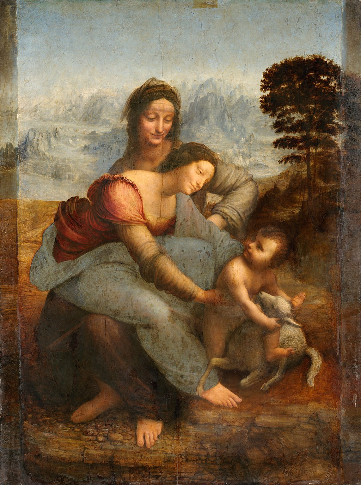

<head>
<meta charset="UTF-8" />
<meta name="keywords" content="drawing, painting" />
<meta name="description" content="drawings by Sunjy" />
<title>Sunjy</title>
<link rel="shortcut icon" type="image/x-icon" href="../../mImages/mCommon/favicon.ico" media="screen" />
<link rel="stylesheet" type="text/css" href="../../mCsses/mCommon/mCssA.css" />
<link rel="stylesheet" type="text/css" href="../../mCsses/mCommon/mCssB.css" />
<link rel="stylesheet" type="text/css" href="../../mCsses/mCommon/mCssC.css" />
<link rel="stylesheet" type="text/css" href="../../mCsses/mCommon/mCssD.css" />
<link rel="stylesheet" type="text/css" href="../../mCsses/mContent/mCssA.css" />
<link rel="stylesheet" type="text/css" href="../../mCsses/mContent/mCssB.css" />
<link rel="stylesheet" type="text/css" href="../../mCsses/mContent/mCssC.css" />
<link rel="stylesheet" type="text/css" href="../../mCsses/mContent/mCssD.css" />
</head>
<script type="text/javascript" src="../../mScripts/mContent/mContentAA.js" /></script>
<script type="text/javascript" src="../../mScripts/mContent/mContentAB.js" /></script>
<script type="text/javascript" src="../../mScripts/mContent/mContentAC.js" /></script>
<script type="text/javascript" src="../../mScripts/mContent/mContentAD.js" /></script>
<script type="text/javascript"></script> 
<script type="text/javascript">
document.write('<div class="mImgAbsolute"></div>');
/*
document.write('<p class="mFontSizeBColor" />From a white paper...</p>');
document.write('<table class="center"><tr><td>');
document.write('');
document.write('</td></tr></table>');
*/
</script>


<script type="text/javascript">
document.write('<p class="mFontSizeBColor" />The Virgin and Child with St. Anne</p>');
document.write('<p class="mFontSizeSColor" />By Leonardo da Vinci. “The Virgin and Child with Saint Anne” by Leonardo da Vinci depicts the grandmother of Jesus, her daughter, the Virgin Mary, and the infant Jesus. Leonardo’s composition depicts the mother-daughter relationship between the two women. St Anne is looking at Mary, as Mary is sitting on her lap, and Mary is looking into her Christ’s eyes.<br><br>Christ is shown grappling with a sacrificial lamb symbolizing his Passion. The painting and its theme had long preoccupied Leonardo, who took many years to work on this painting. Leonardo struggled to capture their relationships and personalities.<br><br>Interestingly, Sigmund Freud attempted to explain Leonardo’s fondness of depicting Mary with her mother. Leonardo was raised by his blood mother initially before being ‘adopted’ by the wife of his father. Freud suggested that painting the Mother of God with her mother was a relationship issue close to Leonardo’s heart, because he, in a sense, had ‘two mothers’ himself. From another perspective, St Anne is portrayed as a young grandmother, and she is not depicted as a manifestly full generation older than Mary.<br><br>According to apocryphal Christian tradition, Saint Anne was the mother of Mary and grandmother of Jesus. Mary’s mother is not named in the gospels. Anne’s name comes from New Testament Apocrypha, of which the Gospel of James, written perhaps around 150 seems to be the earliest mention.<br><br>The New Testament Apocrypha are writings by early Christians that give accounts of Jesus and his teachings, the nature of God, or the instructions of his apostles and their lives. Some of these writings had been cited as scripture by early Christians, but since the fifth century, a consensus emerged, limiting the New Testament to the 27 books of the modern canon. Roman Catholic, Eastern Orthodox, and Protestant churches generally do not view these New Testament Apocrypha as part of the Bible.<br><br>Anne (Arabic: Ḥannah) is also revered in Islam, recognized as a highly spiritual woman, and as the mother of Mary.</p>');
document.write('<table class="center" /><tr><td>');
document.write('<br>Christ is shown grappling with a sacrificial lamb symbolizing his Passion. The painting and its theme had long preoccupied Leonardo, who took many years to work on this painting. Leonardo struggled to capture their relationships and personalities.<br><br>Interestingly, Sigmund Freud attempted to explain Leonardo’s fondness of depicting Mary with her mother. Leonardo was raised by his blood mother initially before being ‘adopted’ by the wife of his father. Freud suggested that painting the Mother of God with her mother was a relationship issue close to Leonardo’s heart, because he, in a sense, had ‘two mothers’ himself. From another perspective, St Anne is portrayed as a young grandmother, and she is not depicted as a manifestly full generation older than Mary.<br><br>According to apocryphal Christian tradition, Saint Anne was the mother of Mary and grandmother of Jesus. Mary’s mother is not named in the gospels. Anne’s name comes from New Testament Apocrypha, of which the Gospel of James, written perhaps around 150 seems to be the earliest mention.<br><br>The New Testament Apocrypha are writings by early Christians that give accounts of Jesus and his teachings, the nature of God, or the instructions of his apostles and their lives. Some of these writings had been cited as scripture by early Christians, but since the fifth century, a consensus emerged, limiting the New Testament to the 27 books of the modern canon. Roman Catholic, Eastern Orthodox, and Protestant churches generally do not view these New Testament Apocrypha as part of the Bible.<br><br>Anne (Arabic: Ḥannah) is also revered in Islam, recognized as a highly spiritual woman, and as the mother of Mary." />');
document.write('</td></tr></table>');
</script>


